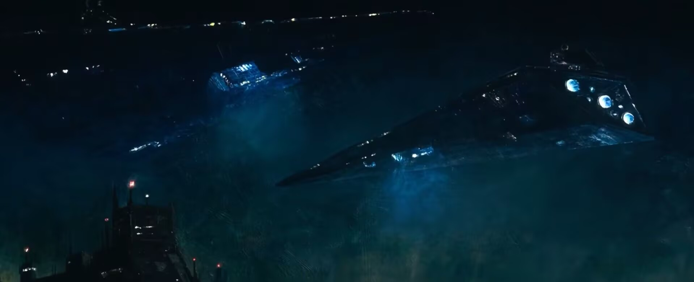
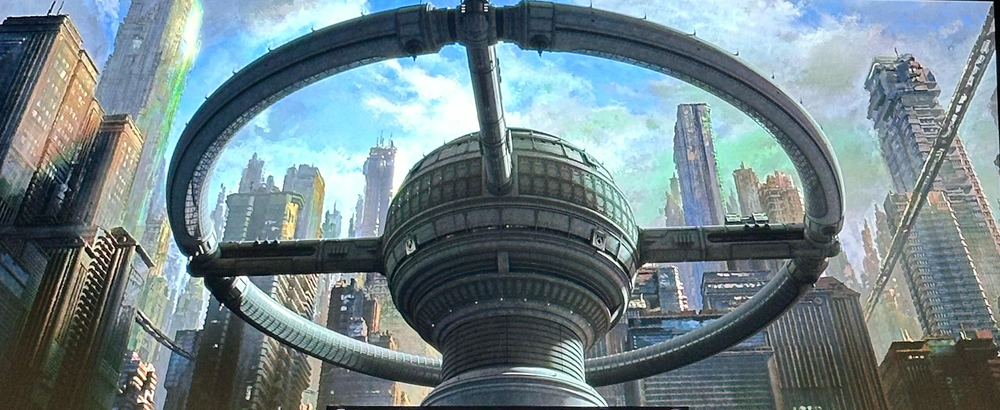
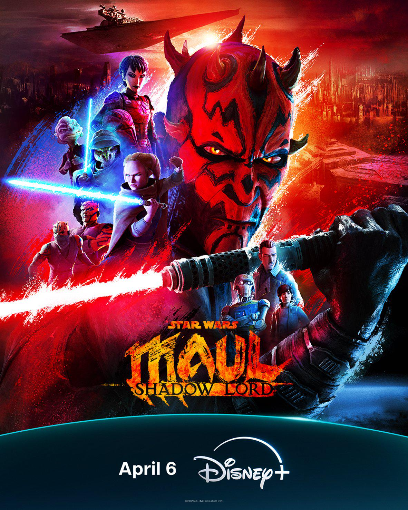
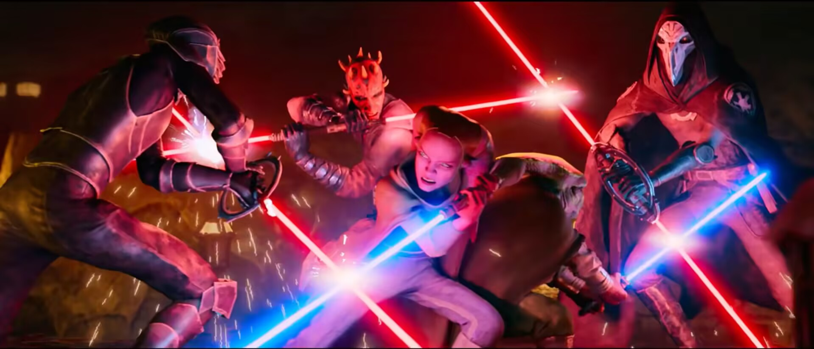
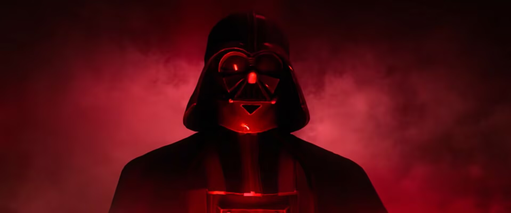
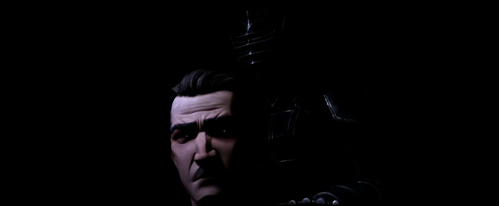
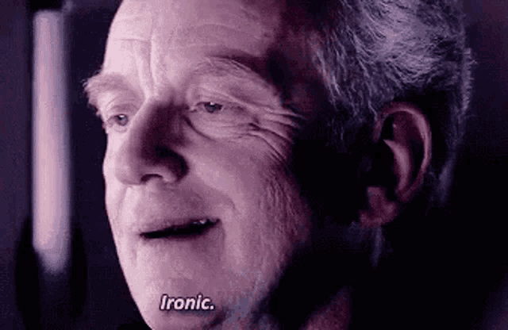

黑白黑白灰（一）：邪恶与更邪恶——《摩尔：暗影尊主》观后
今年星战迷是吃上好的了，星战日五月四日完播的《Maul:Shadow Lord》，观感可以说是超出预期——一部风格化的星战世界观下的太空黑色电影（Space Noir）。
It’s one part Gotham, one part Metropolis and a hundred percent Star Wars with all these different levels and layers.
它融合了哥谭、大都会和百分之百的星球大战的元素，层次丰富，错综复杂。——Matt Michnovetz 谈 Janix 星球
故事发生在 Janix City 这个霓虹闪烁、阴影笼罩的赛博朋克风城市里（这个城市就是 Janix 星球的首都）。和哥谭一样，这里的警力和当地黑帮维持着脆弱的平衡。为了各自的利益，黑帮与黑帮之间、黑帮与警力之间保持着和平。
黑白灰之间微妙的平衡和转换
Lawson 就像是黑色电影里那种典型的地方老警探，他对城市底层和街头规则了如指掌，他知道当地黑帮老大（以及后来的 Maul）都是混蛋，但是他也知道这些混蛋维持着这座城市的地下秩序。同时他也了解帝国的作风，他和妻子关系疏远的原因也许就在此（他的妻子为帝国工作），他知道一旦帝国介入了当地的治安和管理，这个星球就算是沦陷了。
他在 Maul 出现前就已经是一个实用主义的灰色人物了，所以 Maul 出现时他竭尽全力阻止上报帝国——如同黑色电影中常用的逻辑“两害相权取其轻”，Lawson 知道黑帮和 Maul 只是牛皮藓，而帝国则是狂犬病。
这部剧里的帝国不是如正传中那种符号化的反派，而是如《安多》中表现的一样，是纯粹的 “黑”，是一种系统性的、无可抗力的“天灾”。帝国不会像 Lawson 那样去区分“平民”、“线人”或“帮派”。一旦帝国的歼星舰驶入轨道，暴风兵接管街道，那就是无差别的“大清洗”。对于帝国（或黑色电影里的腐败的高层）来说，这座城市里的人命只是报表上的损耗数字。
前期的 Two-Boots 则非常契合黑色电影里那个老警探的死板搭档。作为机器人，在追捕 Maul 的过程中出现了失控状况，第一时间想到的解决方法就是上报帝国，让 ISB 接手。Two-Boots 随后便发现这种不分场合的“白”、这种绝对的秩序对这个星球是致命的。
相比这种略显愚蠢的“白”，剧中还有另一种更传统意义上的“白”——绝地师徒 Daki（师）和 Devon（徒）。作为共和国残存的“和平使者”，绝地的教条要求他们致力维护和平和正义，但在 66 号密令之后，这对绝地只能在社会底层靠乞讨维生，无法展露身份更是让维护正义无从谈起。Devon 刚出场就是难以忍受隐藏身份和乞讨过活的生活而尝试偷窃被捕，这可以说是这个旧时代的“白”向“灰”甚至“黑”转变的开端了。
Maul 在《魅影的威胁》首次作为西斯学徒以及在 tcw 前期出场时代表的也是纯粹的“黑”——一个狡诈的暗影尊主，为了复仇不择手段。而在后续的 tcw 和义军崛起以及这部剧中，Maul 显露出他的可悲的一面：幼年被主母赠与西帝，从小被折磨和训练成一个武器；在自己失去作用以后被西帝背叛、丢弃。他同其他所有人一样深深憎恶着帝国和皇帝，这种似有似无的“黑”向“灰”的影射促成了 Lawson 一行人与 Maul 的结盟和 Devon 最终的堕入黑暗面，从“白”完全转换到“黑”。
亡命徒会听到、看到什么？
这部剧的视觉效果放在如今一众动画作品中也可以说是极其突出和惊艳的。
制作组结合了老派的电影制作方法——背景采用了实体的“玻璃绘画”（Glass Painting）笔触。背景绘画这一手法早在 77 年的新希望中就有应用，呈现出一种独特的层次感和质感。


在 tcw 系列的高水准的 3D 动画基础上，这部剧的画面刻意地打造出略带漫画风格的极具侵略性的风格。这种粗犷阴暗的黏腻质感的风格凸显了 Maul 饱受折磨的极端心理，在打戏中尤其精彩。

光剑尾部拖影特效类似 tcw 最后 Ahsoka 与 Maul 决战中的那样但更破碎、模糊和“不稳定”，像带着小裂纹的火焰一般。
配上这些让本就非常流畅的打戏更能刺激观众神经。判官的旋转光剑的加入与运用以及多对多（终局甚至三对三）的战斗形式让这部剧的剑斗比起过往更加迅猛、夸张、不留退路。

作为一部“太空黑色电影”类型的剧集，有相当多的镜头都发生在黑夜、阴暗的废墟（藏身基地）或逼仄的有限空间内，光与暗的对比也非常明显，增加了画面的凝重感和压迫感。


视觉设计决定了这部剧的基调，声音设计则让观众更加代入。
利用 Maul 的吼叫来制作 Maul 光剑的声效增强了黑暗面的表现；Devon 与 Maul 对峙时背景的低语仿佛是黑暗面对 Devon 的吸引。这些都与风格化的画面相得益彰。
配乐延续了新几部星战剧集的传统管弦乐结合合成电子配乐的风格，但更加阴郁和侵略性（第八集追车戏那段劲爆帝国电音直冲脑颅，和《安多》第二部里南大跳舞那段有的一拼，非常抓耳）。
与魔鬼的交易
随着帝国的降临、判官的猎捕，绝地师徒和 Lawson 一行人不得不与 Maul 结盟。但又如同黑色电影中的另一逻辑——永远不要奢求与恶魔做交易时，恶魔会付全款。
尽管 Daki 与 Daven 师徒与 Lawson 搭档都时刻提防着 Maul，最终 Maul 还是在 Vader 的进攻下找到了空隙，背叛了 Daki，将 Daven 诱入黑暗面。
整部剧后半部分的核心剧情——没有赢家的大逃亡——最终以所谓的“白”的消散结束，正如许多黑色电影中那样带着些讽刺意味。

我的评分：9/10
视听登峰造极，但剧情实际上有些老套（如上述的，有些太符合黑色电影套路了）。
还有个点我要吐槽一下：为什么 Lawson 可以一手枪射穿 LAAT/i 的驾驶舱玻璃把驾驶员打死，但是白兵的 DC-15S 只能在 Devon 偷来的车上射出划痕？